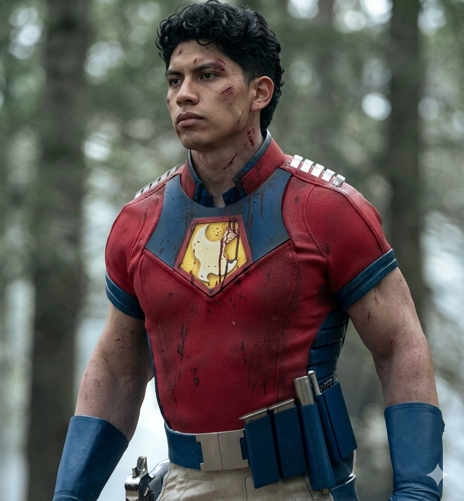

Yanshu Mancco

Resumen
Soy una persona productiva y organizada.
Destaco por mi disciplina y responsabilidad en cada
proyecto, así como por mi capacidad de observación
y trato con las personas.
Poseo habilidades sólidas para trabajar en equipo y bajo presión,
lo que me permite adaptarme a entornos dinámicos y alcanzar
los
objetivos que me propongo.
Educación
- Egresado en Ingeniería de Sistemas - Universidad Nacional San Cristóbal de Huamanga(2025)
Experiencia Laboral
Aún no cuento con Experiencia Laboral en Ingeniería de Sistemas
Enero 2026 - Abril 2026
- Answered customer inquiries via phone and email
- Resolved customer complaints and issues
- Maintained customer records and updated account information
Habilidades
- Inglés: ⭐️⭐️⭐️⭐️
- Python: ⭐️⭐️⭐️
- HTML, CSS y JavaScript: ⭐️⭐️⭐️⭐️⭐️
- SQL, MySQL: ⭐️⭐️⭐️
- Windows, Linux: ⭐️⭐️⭐️⭐️
- Trabajo en equipo: ⭐️⭐️⭐️⭐️⭐️
- Liderazgo: ⭐️⭐️⭐️⭐️
Certificaciones
- UDEMY - The Complete Full-Stack Web Development Bootcamp(2026)
OTROS